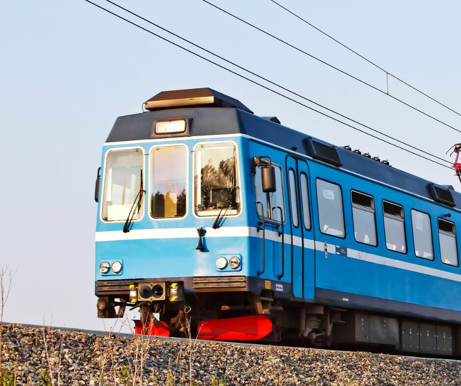
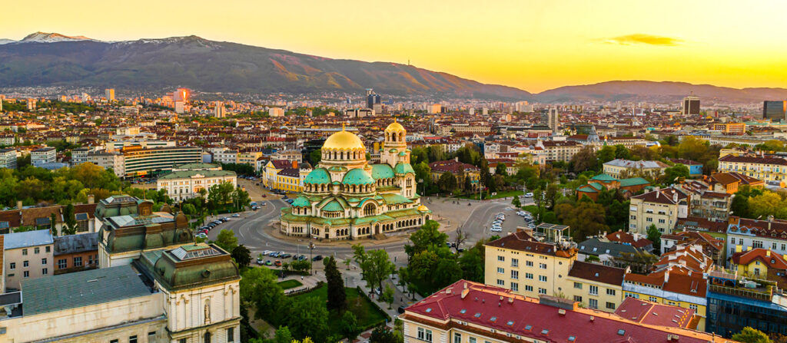
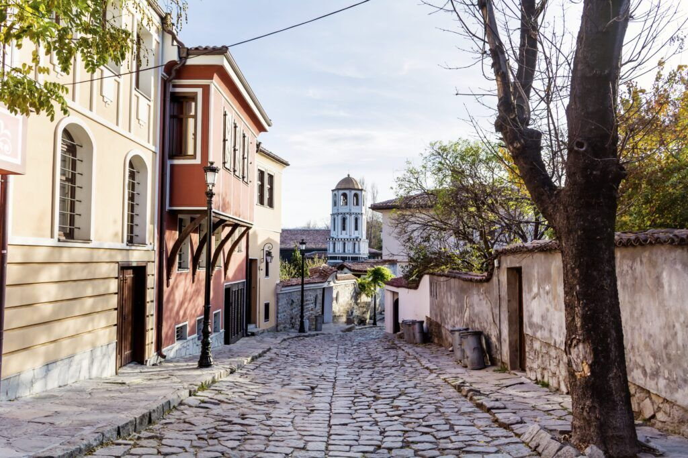
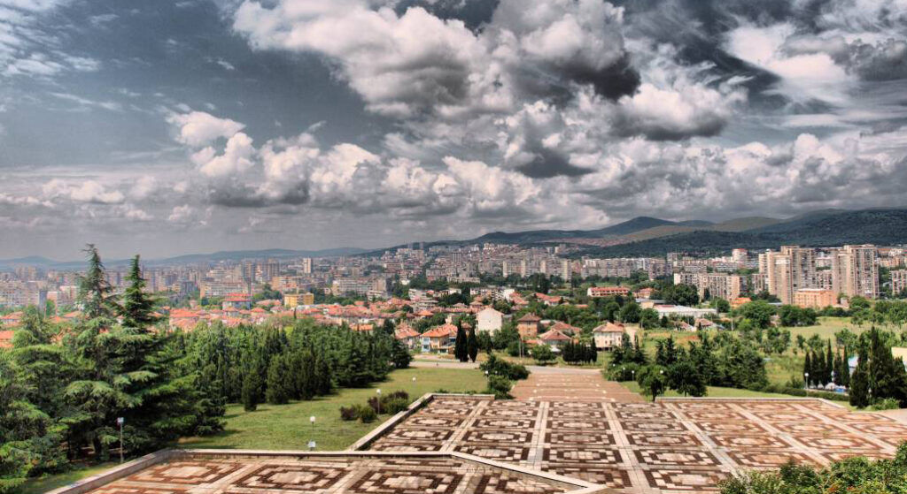
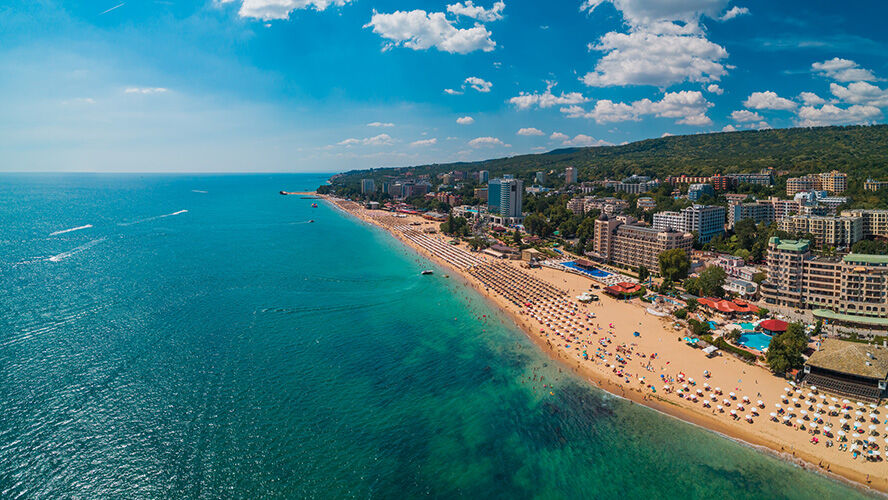

The Balkan Express
Like an Interrail, but for entrepreneurs.
A journey by train through stories and startups, Bulgaria.

Like an Interrail, but for entrepreneurs.
We crossed Bulgaria by rail with young entrepreneurs who wanted to share what it takes to build something of their own. Along the way they told their stories to local people in four Human Libraries.
Corner to corner of the country
More than 500 km by train with the international Eurolibrary team, with stops in four cities.
Sofia
Roman history, Orthodox churches and edgy street art, with mountain views and a young, lively energy.

Plovdiv
Europe's oldest continuously inhabited city, where ancient Roman theatres meet colourful creative quarters.

Stara Zagora
Modern and green with ancient roots: Roman ruins, the Neolithic Museum and the quiet charm of central Bulgaria.

Varna
The pearl of the Black Sea, with golden beaches, Roman baths and lively nights. Summer, culture and sea in one place.

What this chapter delivered
Ratings and favourite activity come from two participant feedback forms.
What worked
- The Human Library on the train, which participants singled out as a highlight.
- The mix of backgrounds and professions in the group, and the sense of connection it created.
- Singing and dancing together in Varna, and a last trip to the beach.
What we learned
- A heat wave made the programme tough. Participants suggested later start times for events, more breaks and more water and snacks.
- They also asked for more time in each city and at the start to get to know each other's stories, and for a larger travel allowance for people coming from far away.
Inspiring.
A powerful human experience of connection, growth, and shared vulnerability.
It was a fun, dynamic trip focussed on connection.
A library where the books are people
Picture a library where the books are young entrepreneurs. You pick a title, sit down for a timed conversation and hear how someone built something from nothing, including the setbacks nobody posts about. On the Balkan Express that library never stayed in one place. It opened in city squares and parks, and even on a moving train between cities.
How does it work? Readers choose a book from the catalogue and borrow it for a timed conversation. Respect comes first, books decide what they share, and nobody has to agree. The point is to understand.
See how the Human Library works